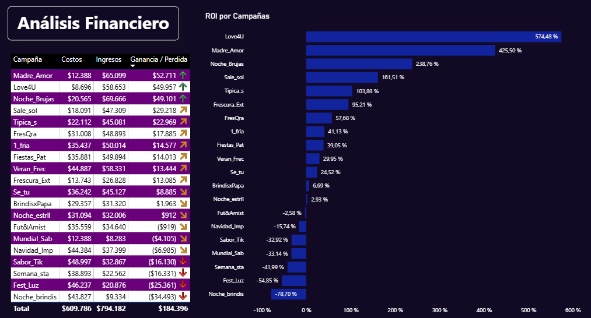
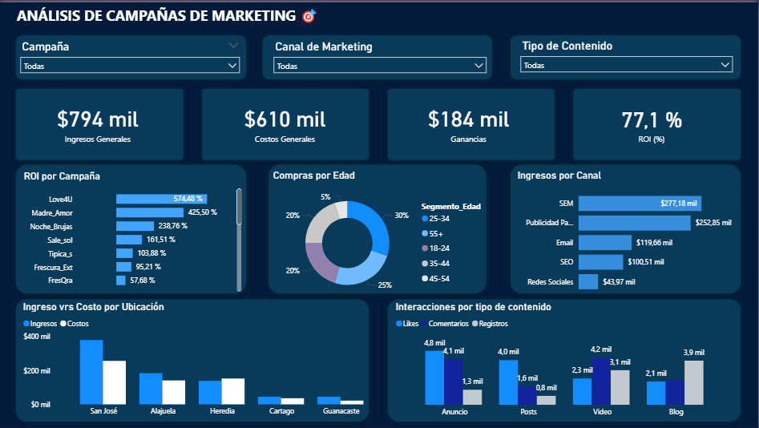

Análisis de la eficiencia y el desempeño de las campañas de Marketing
Resumen Ejecutivo
En un entorno empresarial cada vez más competitivo, las campañas de marketing deben estar respaldadas por decisiones basadas en datos. Este proyecto realiza un análisis integral de campañas de marketing, combinando análisis exploratorio, segmentación de clientes y modelos de machine learning para evaluar el desempeño, entender el comportamiento del consumidor y predecir resultados clave. Los hallazgos permiten optimizar el uso del presupuesto, mejorar la personalización de estrategias y aumentar el retorno de inversión (ROI).
Problema y Objetivos
El Problema
La empresa invierte grandes sumas en campañas de marketing sin comprender con claridad qué estrategias son efectivas, qué canales generan mayor impacto ni cómo se comportan sus clientes en diferentes contextos.
Objetivos
- Evaluar el rendimiento financiero de las campañas y su ROI.
- Identificar los canales y contenidos más efectivos.
- Analizar el comportamiento del cliente por ubicación y edad.
- Segmentar a los clientes para personalizar las estrategias.
- Desarrollar modelos predictivos para anticipar el desempeño de campañas.
Datos y Metodología
El análisis se realizó utilizando un conjunto de datos que incluía información detallada sobre 20 campañas de marketing, métricas de comportamiento online (como clics, registros y compras), datos demográficos (edad, ubicación), participación en programas de lealtad y encuestas de satisfacción. El proceso metodológico comenzó con la limpieza y preparación de los datos, seguido de un análisis exploratorio para detectar patrones y anomalías. Se aplicaron técnicas de segmentación para entender mejor a los clientes, y luego se desarrollaron modelos de regresión (incluyendo regresión polinómica con regularización Ridge) y algoritmos de machine learning como Random Forest y XGBoost. La validación cruzada, el análisis de residuos y el cálculo de VIF aseguraron la robustez de los modelos.
Proceso de Análisis
- Limpieza y recolección de Datos
- Análisis Exploratorio de Datos (EDA)
- Segmentación de clientes (por edad, ubicación, lealtad).
- Modelos de regresión (lineal, polinómica con Ridge).
- Modelos de Machine Learning (Random Forest y XGBoost).
- Validación cruzada, análisis de residuos y evaluación del VIF.
Herramientas Utilizadas
Hallazgos Clave y Visualizaciones
Uno de los principales hallazgos fue que las campañas alineadas con fechas especiales, como San Valentín y el Día de la Madre, obtuvieron los mejores ROI, mientras que otras campañas realizadas en diciembre presentaron bajo rendimiento, posiblemente por saturación del mercado. También se detectó que la mayoría de las campañas excedieron su presupuesto, lo que plantea la necesidad de una planificación más eficiente
Power BI - General Financiero

En cuanto a los canales de marketing, se comprobó que SEM y Publicidad Pagada son los más rentables y generan mayor interacción, especialmente cuando se utilizan formatos como videos y blogs, que superan ampliamente a los posts simples. A nivel geográfico, Alajuela registró la mayor actividad online; sin embargo, San José continúa siendo el mercado más relevante, lo que sugiere la necesidad de estrategias diferenciadas por región. En términos demográficos, los grupos de edad de 25-34 años y mayores de 55 generaron más ingresos. Por otro lado, los jóvenes de 18-24 años mostraron la mayor actividad online, convirtiéndose en un público clave para estrategias digitales.
Power BI - General

Los modelos predictivos confirmaron que la regresión polinómica con regularización Ridge fue el más preciso, explicando el 99% de la varianza del ROI. Aunque modelos como Random Forest y XGBoost también ofrecieron buenos resultados, la regresión polinómica logró capturar mejor los patrones estructurados del dataset.
Conclusiones y Recomendaciones
Este proyecto proporcionó un análisis integral de las campañas de marketing, comportamiento del cliente y la efectividad de diferentes estrategias, permitiendo tomar decisiones estratégicas basadas en datos para optimizar el rendimiento y el retorno de inversión.
Conclusiones Clave
-
Análisis de Campañas de Marketing:
- 1. Las campañas "Love4U" y "Madre_Amor" generaron los mayores ROI, destacando la efectividad de aprovechar eventos especiales.
- 2. Campañas como "Noche_brindis" y "Fest_Luz" tuvieron peor ROI en diciembre, lo que sugiere posible saturación del mercado o estrategias ineficaces.
- 3. La mayoría de las campañas excedieron su presupuesto, lo que señala la necesidad de optimización de costos.
- 4. De 20 campañas, 13 obtuvieron ganancias y 7 generaron pérdidas, enfatizando la importancia de la rentabilidad individual.
-
Canales de Marketing y Contenido:
- 1. Publicidad Pagada y SEM son los canales más rentables y efectivos en interacciones.
- 2. Videos, blogs y anuncios son los formatos de contenido más eficaces, superando a los posts simples.
- 3. Se recomienda mejorar los CTAs en Email y optimizar el SEO para incrementar conversiones.
-
Comportamiento y Satisfacción por Ubicación:
- 1. Alajuela muestra la mayor actividad online, mientras Cartago y Guanacaste tienen bajos niveles de interacción.
- 2. Guanacaste tiene la mayor satisfacción (4.51), y San José la más baja (2.77), lo que indica áreas de mejora en la capital.
- 3. San José tiene alta competencia, lo que dificulta la captación de mercado.
-
Segmentación y Programa de Lealtad:
- 1. Grupos de 25-34 y mayores de 55 generan los mayores ingresos, siendo clave para estrategias específicas.
- 2. Usuarios de 18-24 tienen mayor actividad online, ideal para formatos digitales.
- 3. Clientes leales contribuyen con ingresos significativos, justificando la inversión en fidelización.
-
Tendencias Temporales y Correlaciones:
- 1. Marzo, septiembre y diciembre concentran la mayor actividad (registros, clics, compras).
- 2. No se hallaron correlaciones fuertes entre Interacción, ROI, Compras y CLV.
-
Evaluación de modelos predictivos:
- 1. La Regresión Polinómica con Ridge fue el modelo más preciso (99% de varianza explicada).
- 2. La transformación logarítmica de datos fue esencial para mejorar modelos lineales.
- 3. Modelos de árboles (Random Forest y XGBoost) tuvieron buen desempeño, pero no superaron la regresión polinómica, sugiriendo patrones estructurados.
- 4. La validación cruzada reveló inestabilidad en la regresión logarítmica entre folds.
Recomendaciones
-
Optimización de Campañas:
- 1. Equilibrar la inversión para no exceder costos y mantener la eficacia.
- 2. Enfocar esfuerzos en SEM y Publicidad Pagada, priorizando videos y blogs.
- 3. Personalizar estrategias por ubicación y edad para maximizar el impacto.
-
Programa de Lealtad:
- 1. Fortalecer el programa de lealtad: la contribución de los clientes fidelizados justifica la inversión.
-
Planificación Estratégica:
- 1. Aprovechar los meses de mayor actividad (marzo, septiembre, diciembre) para intensificar campañas.